Environmental Fluid Dynamics: Turbulence
{kind=link}
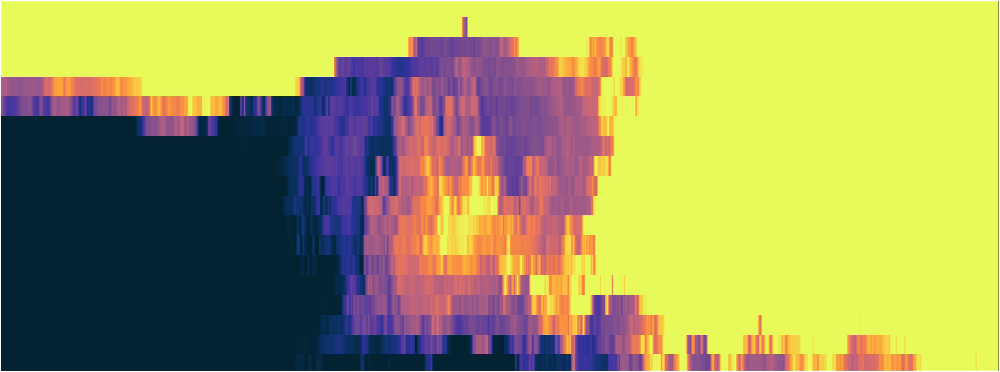
Objective
My Master's thesis research focuses on understanding the patterns, strength, and secondary effects of turbulence at the head of La Jolla Canyon, an underwater canyon located just off the coast of La Jolla Shores, CA. Turbulent mixing is a crucial process in coastal oceanography, influencing nutrient distribution, pollutant transport, and marine ecosystem dynamics. It also drives coastal upwelling, contributing to the local environment prosperity and adding a piece to the puzzle for global thermohaline circulation closure.
The head of La Jolla Canyon is located quite close to the shore of the ocean, nearly in the surf zone, so the dynamics of the flow are more complicated than other sites. I aim to calculate turbulent dissipation (the mixing rate or "strength" of turbulence) in the head using multiple instruments and methods. I will also show how flow through the canyon and turbulence can be visualized.
What is Turbulence?
Turbulence is a branch of fluid dynamics dealing with irregular and chaotic flow. It occurs everywhere in the environment, dominating nearly all systems and engineering fluid applications. It can be good, such as providing nutrient transport in the ocean, or bad, such as severe weather events.
{kind=link}
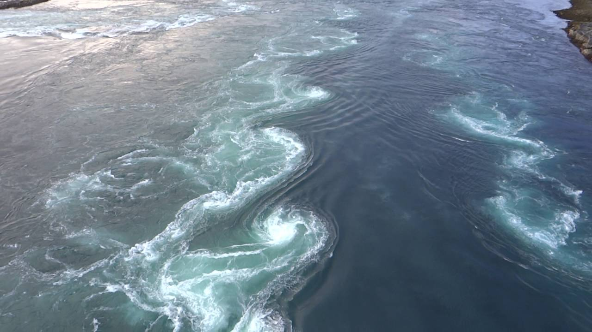
Maelstrom (eddy) known as Saltstraumen in Norway. Source
Turbulence research is a very active and growing field, my goal here is to provide basic context to why and how we study turbulence. At it's core, turbulence is the driver of energy transfer. Lots of energy is held in large-scale fluid structures, often called eddies or vortices. Turbulence breaks eddies down into smaller ones, and then those are broken down into even smaller ones, it is a cascade of energy from large to small length scales. The eddies become smaller and smaller until the frictional forces dominate and the eddy is dissipated into heat. The rate at which eddies are broken down, or dissipated, depends on the strength of the turbulence.
{kind=link}
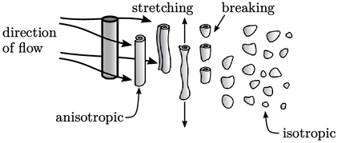
Energy Cascade in Turbulent Flow. Source
The benefit (or detriment) of turbulence to the environment is how well it transports & mixes fluid. If nutrients are supplied from one location to a turublent flow, the energy cascade will spread out and mix the nutrients at much faster rate than molecular diffusion. If there is stronger/weaker mixing in particular locations it can lead to other phenomena such as upwelling or downwelling. On the other hand, it can also be an efficient way to spread pollutants around from a spill or drainage outlet.
The goal of my research is identify how strong the turbulence is at the bottom of La Jolla Canyon. We also want to identify when the turbulence is strong or weak, look for patterns, and compare the values to other studies.
Location
{kind=link}
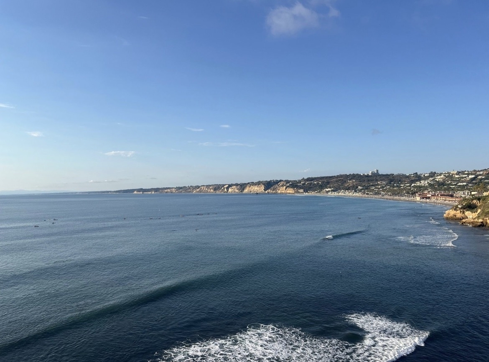
Picture of La Shores taken from a nearby trail. (by me)
{kind=link}
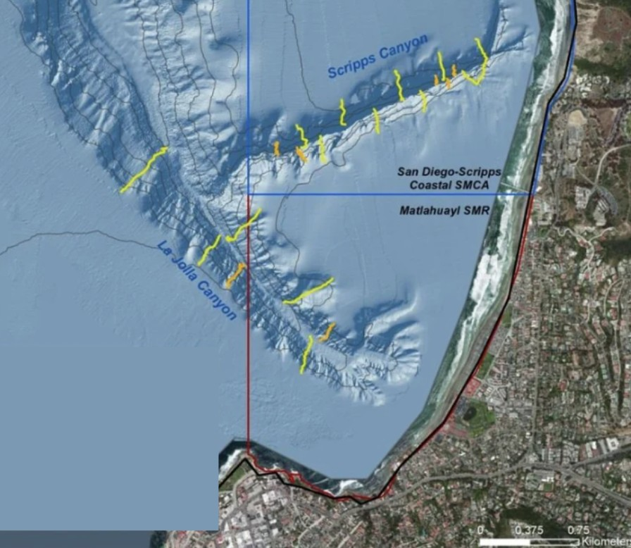
LJ Canyon Bathymetry overlayed on satellite image. Source
{kind=link}
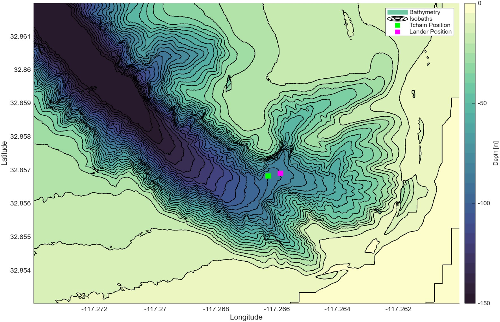
LJ Canyon Bathymetry, green and purple markers show instrument deployment locations.
Measuring Turbulence
There are many ways to measure the strength of turbulence, such as hot wires, laser Doppler techniques, and acoustics. In the ocean, we target variables that we know turbulence will affect, flow velocity and temperature.
Eddies has a distinct signature in the structure of fluid velocity, and as they break down from turbulence, the structure breaks down. This change is observed through creating spectra of the velocity timeseries. Spectra show much energy is contained within different length scales, and naturally it should decay as turbulence breaks things down. We apply a similar technique with temperature, turbulence should take temperature variations that exist in eddies and smooth them out as the eddies break down.
Velocity can also be used to find turbulent dissipation by looking at structure functions. The idea here is that the velocity within an eddy is highly correlated, and velocities outside of the eddy are not. The rate at which velocity decorrelates from a fixed starting point yields the strength of the turbulence.
Finally, turbulent dissipation can be found by looking at temperature measurements. In the ocean, the water gets cooler as it gets deeper (in relatively shallow depths). When an eddy rolls through a sensor array, it is rotating fluid in a circular fashion. This takes water and flips it, displacing colder water on top of warmer water. This creates an instability and leads to mixing. It is hypothesized that the strength of the turbulence is related to how far the cold water gets flipped over, and the amount of stratification, which is a barrier to turbulence.
{kind=link}
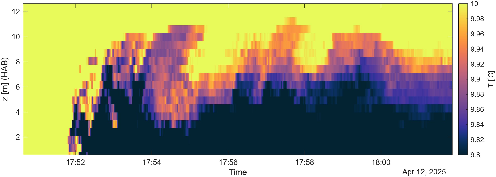
Cold water (dark colors) displaced vertically by an eddy, mixing over time, and returning to same background temperature.
We deployed two Acoustic Doppler Current Profilers (ADCPs) which use Doppler shifts from acoustic pings measure flow velocity. The ADCPs measure velocity at several distances away from their deployed position, we set them up to measure vertically upward from the bottom of the ocean. One ADCP (Nortek AquaDopp) was focused on high resolution data in the bottom 2 meters of the water column, and the other (Nortek Sentinel V) measured lower resolution data in the entire water column. This gives us velocity data we need to make spectra and structure functions, and see how turbulence varies in both time and depth.
{kind=link}
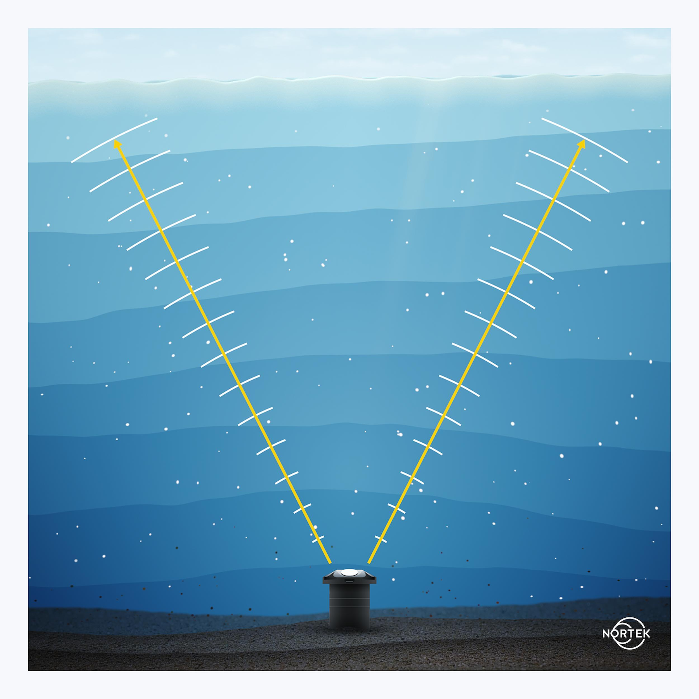
Acoustic Doppler Current Profiler Schematic. Source
We also deployed a string of temperature sensors that were attached to the seafloor and held up by floats. These sensors measured temperature over the bottom 12 meters of the water column (in 90 meters depth). This gives us the data we need to do the Thorpe scale and temperature spectra analysis, also as a function of depth and time.
The instruments were deployed for eight days at the bottom of the canyon in April 2025.
Data Timeseries Summary
{kind=link}
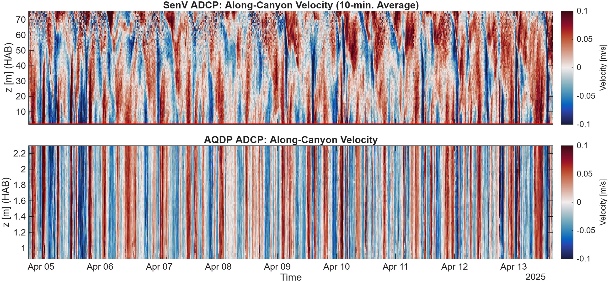
Velocity timeseries from the two ADCPs. The top subplot shows the full water column data, the bottom is the bottom ~2 meters. Both velocities have been rotated into along-canyon orientation using principal component analysis. This orientation is important because it will be the direction that generates the most turbulence, and is not aligned with the four cardinal directions.
{kind=link}
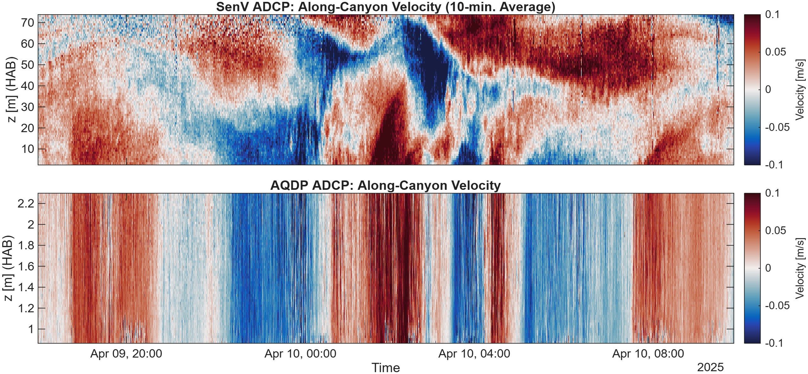
The previous plot zoomed in on ~16 hours of data. Note the strong shear and grainy data near the top of the full water column as acoustic backscatter worsens.
{kind=link}
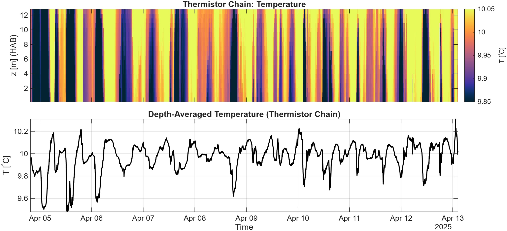
Top: Temperature timeseries from the sensor string. Bottom: Depth-averaged temperature signal, where sudden temperature drops represent cold bores rolling through the sensor array.
{kind=link}
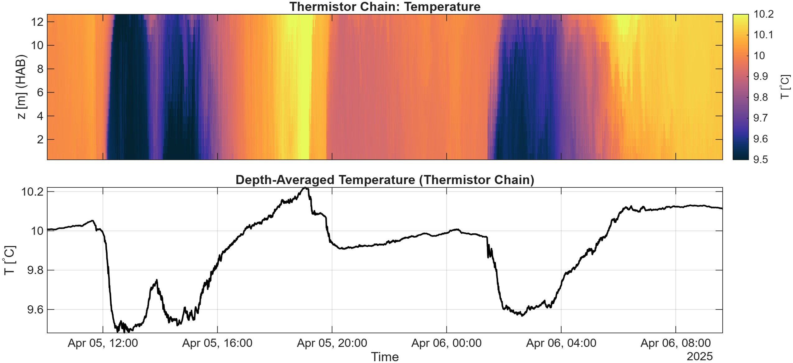
Previous plot zoomed in on a few cold bore events.
{kind=link}
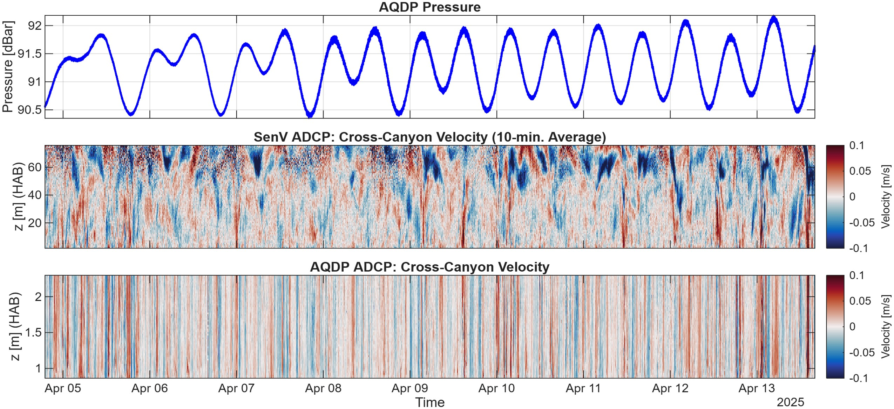
Other important timeseries: Pressure taken from the AquaDopp ADCP, note how the signal is diurnal at the beginning of the timeseries, and semidiurnal in the second half. The middle and bottom subplots show the off-axis velocity component, it is considerably weaker than the on-axis component.
Visualizing Turbulent Dissipation
Quality control is applied to the raw data shown in the previous section. Details are a little extensive for the overview here, but they involve removing velocity spikes, data with bad correlation, adjsuting artificial sensor biases, and more. After that, turbulent dissipation is found in the four ways described previously. First we will look at velocity spectra.
Velocity Spectra
{kind=link}
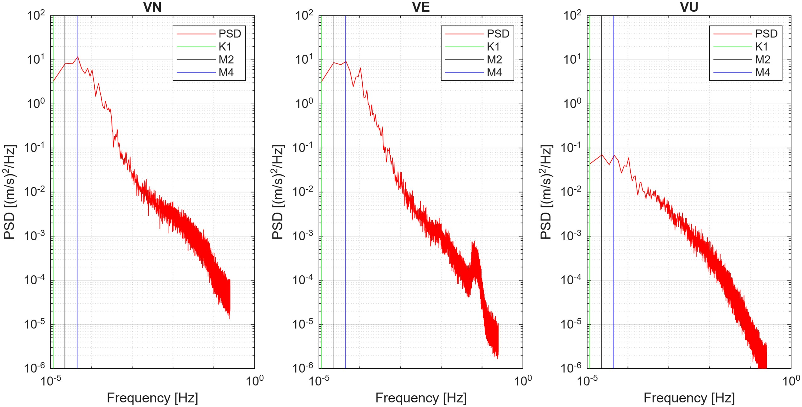
One-day velocity spectra from the AquaDopp ADCP. Left: north velocity, Middle: east velocity, Right: vertical velocity. The east and north velocity spectra have peaks within the surface wave band (5-30 second periods) which interferes with turbulence measurements. This also ruins the along-canyon velocity spectrum. The vertical velocity is not contaminated with waves and can be used to find turbulent dissipation. Notable diurnal and semidiurnal tidal frequencies are also plotted.
The above spectra highlight how surface wave motion can block turbulence from being measured. For the vertical velocity, which can be used, we will only look at 20 minute long spectra and to see how strong the turbulent dissipation is.
{kind=link}
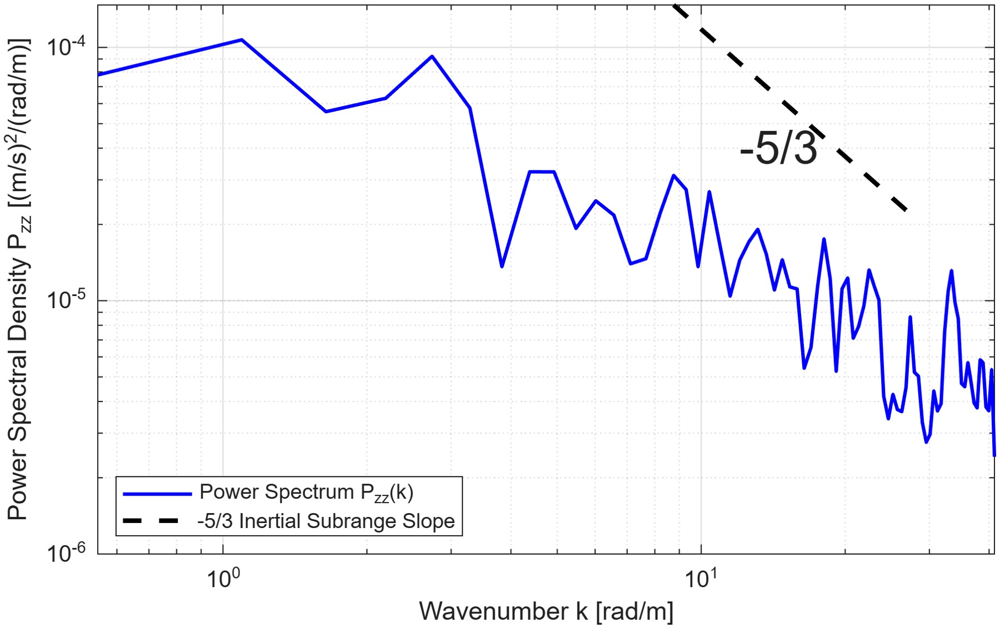
One example of a 20 minute vertical velocity spectrum. Turbulence theory (Kolmogorov's Hypothesis) states that the energy cascade should follow a -5/3 slope (in loglog space) for turbulence to be present. The strength of the turbulence depends on the PSD value where the slope matches -5/3. We can see the region >10 m^-1 is close to -5/3.
Structure Functions
Structure functions are similar to velocity spectra in that they also should scale with a power law for turbulence to be present. The structure function fixes one velocity and then compares the rest of the velocities vertically away from the fixed point. The squared velocity difference should scale with a 2/3 power law.
{kind=link}
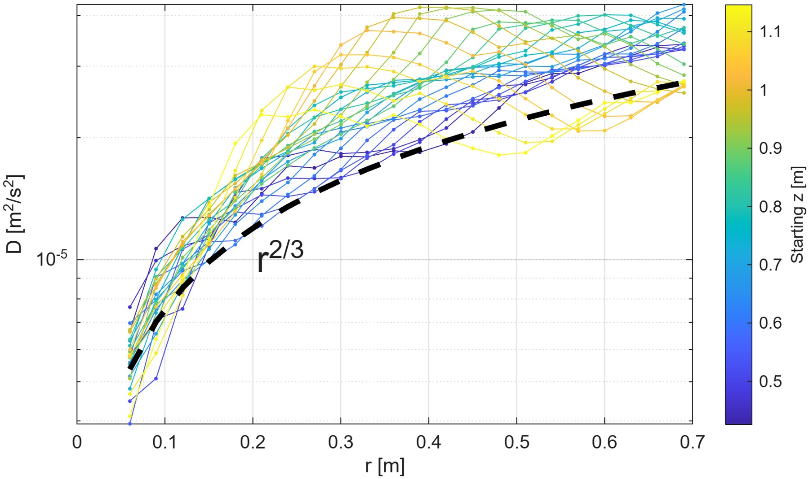
An example of one 20-minute structure function. Each curve has a different reference point in the bottom half of the AquaDopp profile. The coordinate r represents moving away from the reference point, and as that happens the squared velocity difference (D) should scale with a 2/3 power law. The strength of turbulent dissipation scales with how high D is.
{kind=link}
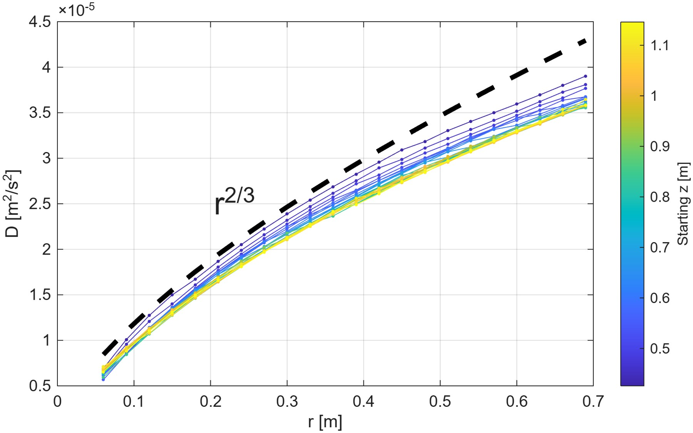
Average 20min. structure function for the entire timeseries, most of the variations have been averaged out. The portion that follows 2/3 power law is near the center of the r range.
Thorpe Scale
The Thorpe scale measures the strength of turbulence by tracking how far water is displaced vertically during a turbulent event. These overturns are easily viewable in the raw temperature signal. The strengthe of turbulence depends on both the size of the overturn and the level of stratification across the overturns vertical range. Stratification is a measure of the vertical density gradient in the ocean. If there is a large gradient, the stratification is high, and vice versa. Stratification is a barrier to turbulence, so a smaller overturn in a highly stratified environment could be equivalent to a large overturn in a less stratified environment.
{kind=link}
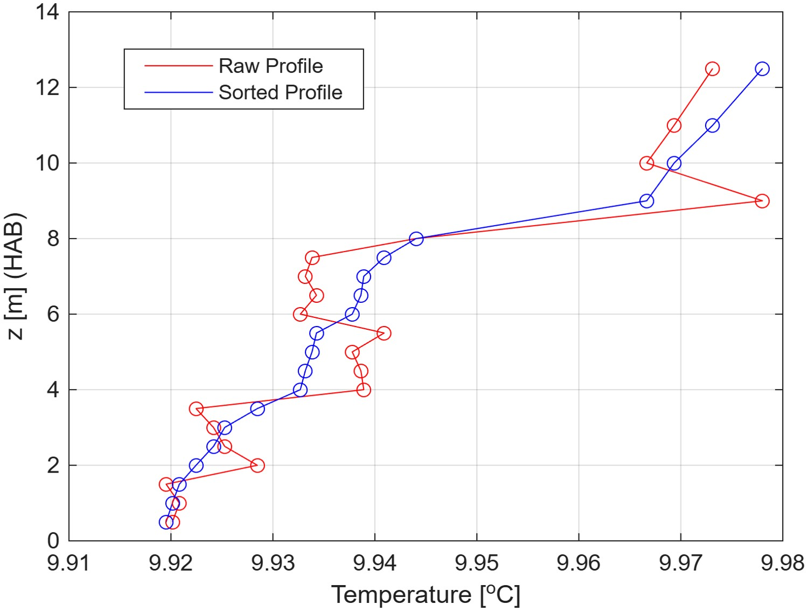
An example of a single temperature profile. The red line is the raw signal and the blue is the sorted signal. Areas where the red and blue line deviate are overturns. There are multiple overturns in the profile, distinguishable by locating where the red line crosses the blue from left to right. Multiple overturns in the profile also yields vertical resolution for turbulent dissipation.
{kind=link}
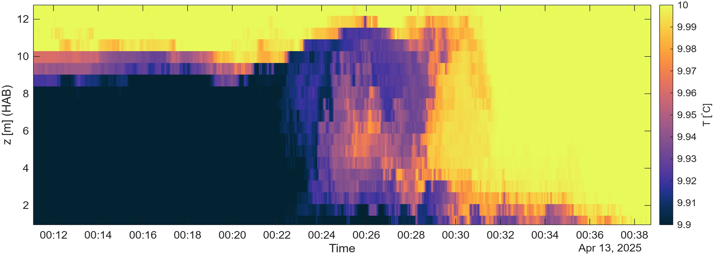
{kind=link}
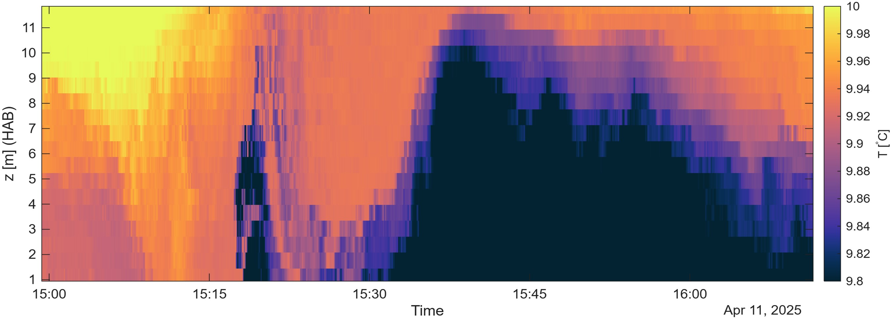
{kind=link}
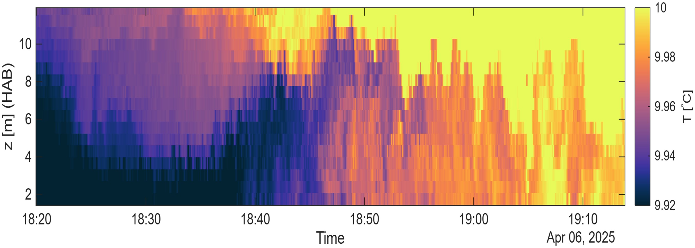
{kind=link}
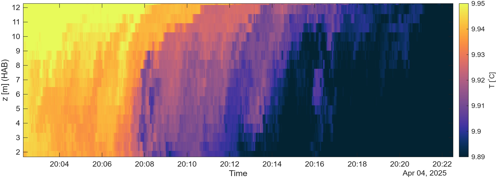
{kind=link}
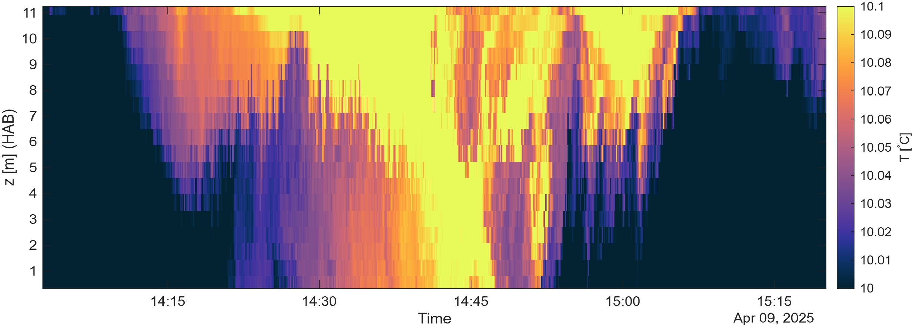
Examples of temperature overturns. Color scales are adjusted to show contrast in differing mean temperature conditions.
Temperature Spectra
Temperature spectra are similar to velocity spectra in that the spectrum should follow a -5/3 curve for turbulence to be present. However, the spectrum values are also related to another variable, the dissipation of the temperature variance. This variable (often called chi) represents smoothing of temperature differences due to turbulent dissipation, and it requires extra approximations to deal with. The dissipation of the temperature variance is first found using temperature spectra, and then the dissipation ratio is used to relate it to turbulent dissipation.
{kind=link}
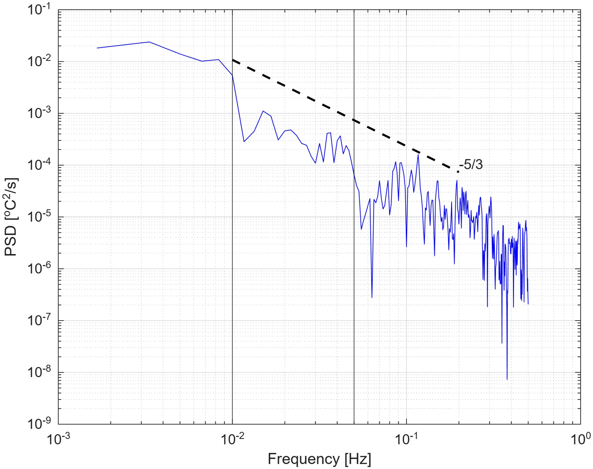
Example of 10 minute temperature spectrum.
{kind=link}
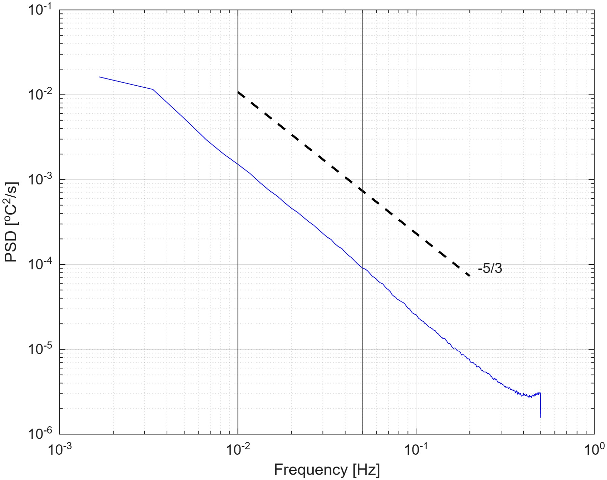
The mean temperature spectrum over the entire timeseries.
{kind=link}
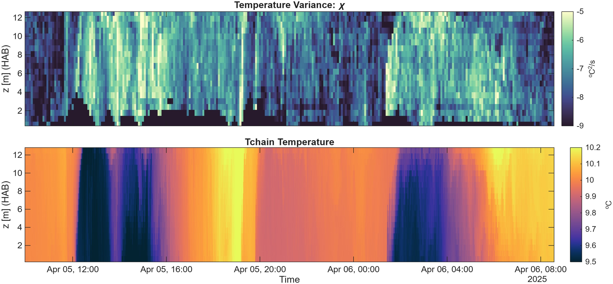
The dissipation of temperature variance (chi) and the temperature over a a few cold bores. Chi increases during the onset of the bores as turbulence rolls through the sensor array. Chi has gaps near the bottom due to data quality control.
Turbulent Dissipation Events
Using the previous four methods turbulent dissipation is calculated and compared. We also will look for patterns or features of the turbulence that can be viewed graphically.
{kind=link}
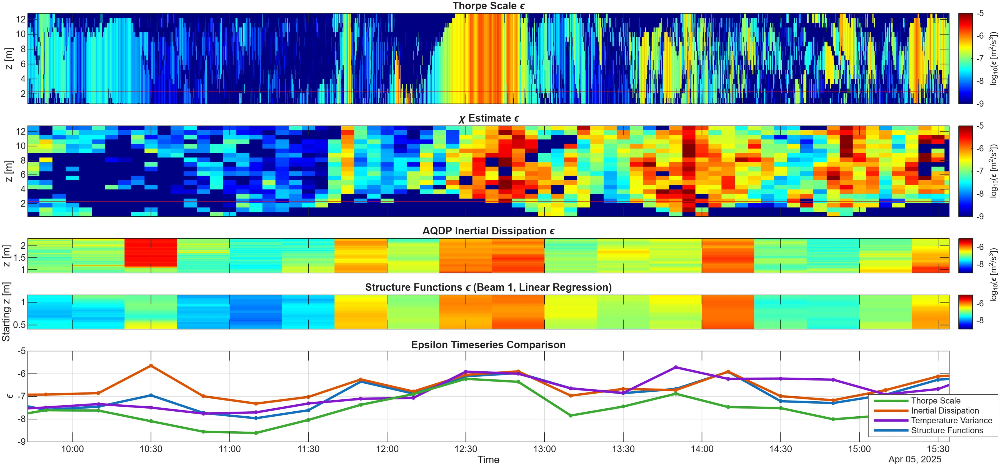
The results of turbulent dissipation for a cold bore event. The temperature based dissipation methods, Thorpe scale and temperature variance, show clear vertical resolution in the bottom 12 meters. The main event spans the full vertical range, but smaller less energetic evens are suspended at different vertical locations. In fact, there is a signficant amount of lingering turbulence after the main event, the ocean is nearly constantly in a state of overturning. The ADCP-based dissipation methods, velocity spectra and structure functions, only cover the bottom 2 meters, so they are more like point measurements. The bottom plot shows 1:1 comparisons of the four methods. All methods are depth-averaged, and the temperature-based methods are time-averaged to match the 20 minute clock of the ADCP methods. All four methods agree during the main event, but begin to differ elsewhere.
{kind=link}
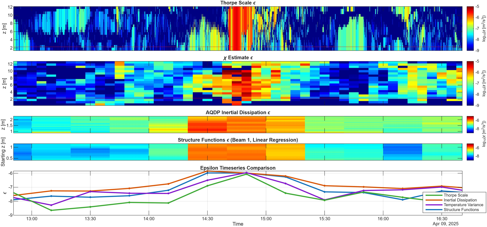
Another example of a turbulent event. The Thorpe scale tends to underestimate turbulent dissipation outside of main events.
It is also helpful to compare turbulent dissipation events to other variables, such as velocity and temperature. The following plots show Thorpe scale dissipation compared to other variables. The Thorpe scale was chosen due to it's high time and vertical resolution.
{kind=link}
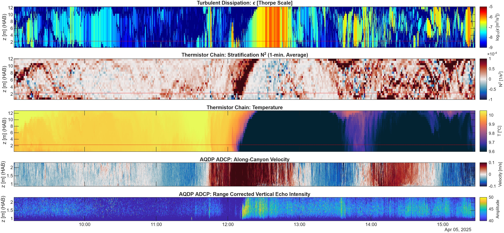
This plot shows Thorpe scale dissipation, stratification, temperature, along-canyon velocity, and acoustic backscatter amplitude over a cold bore event. The stratification shows strong barriers that prevent turbulence from mixing. Anytime the stratification is blue, that means there is an instability in density and mixing will occur. The along-canyon velocity shows that this bore is being pushed up-canyon from deeper, colder waters. There is also rapid changes in velocity direction (relative to how fast velocity changes at other locations at the bottom of the ocean) leading to temperature increases as warm water is pushed back down-canyon. The acoustic backscatter amplitude shows a lot of physical mass present in the cold bore.
{kind=link}
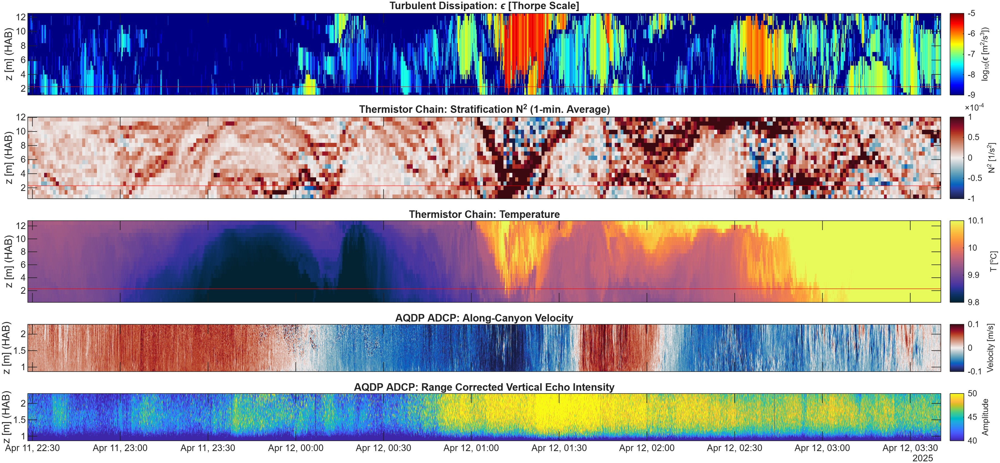
Another example of a turbulent event with accompanying variables. In this figure in particular, lines of stratification can be seen holding turbulence between them. Rapid velocity changes lead to mixing. Another note: the velocity and temperature measurements are not at the same location, in fact they are about 35 meters apart, so one instrument will always lead another depending on flow direction.
Summary
Here I have shown some of the key ideas, methods, findings, and visualizations of my research on turbulent dissipation at the bottom of the La Jolla submarine canyon. It is a chaotic and complicated but incredibly interesting environment. What is shown here is not the full story for the work I have done on this project, so if you are interested in seeing other aspects/visualizations of oceanographic data processing, see the section Oceanographic Data Visualizations. Thank you for reading!